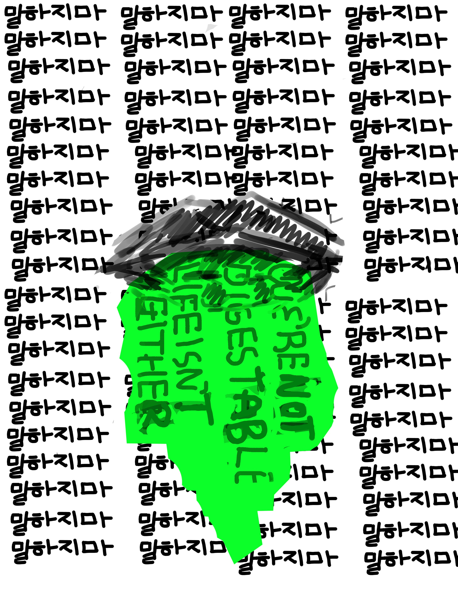
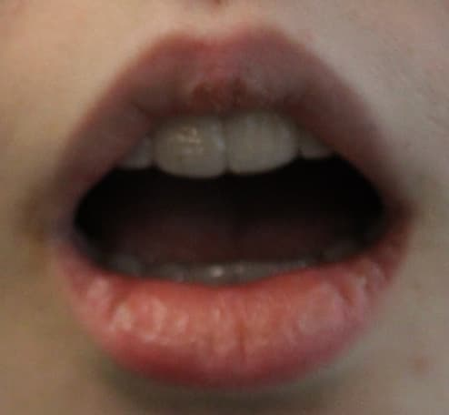
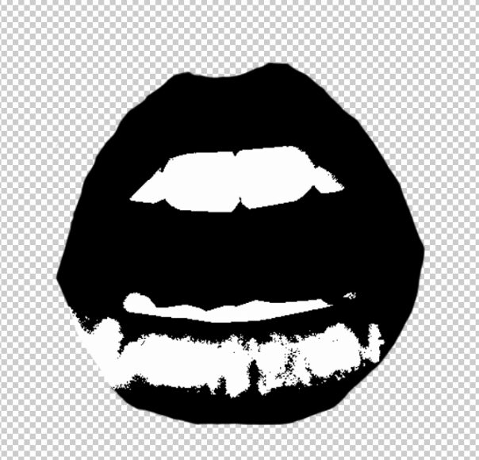
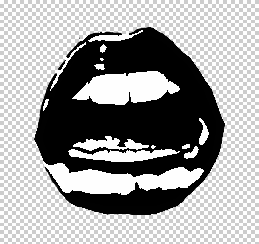
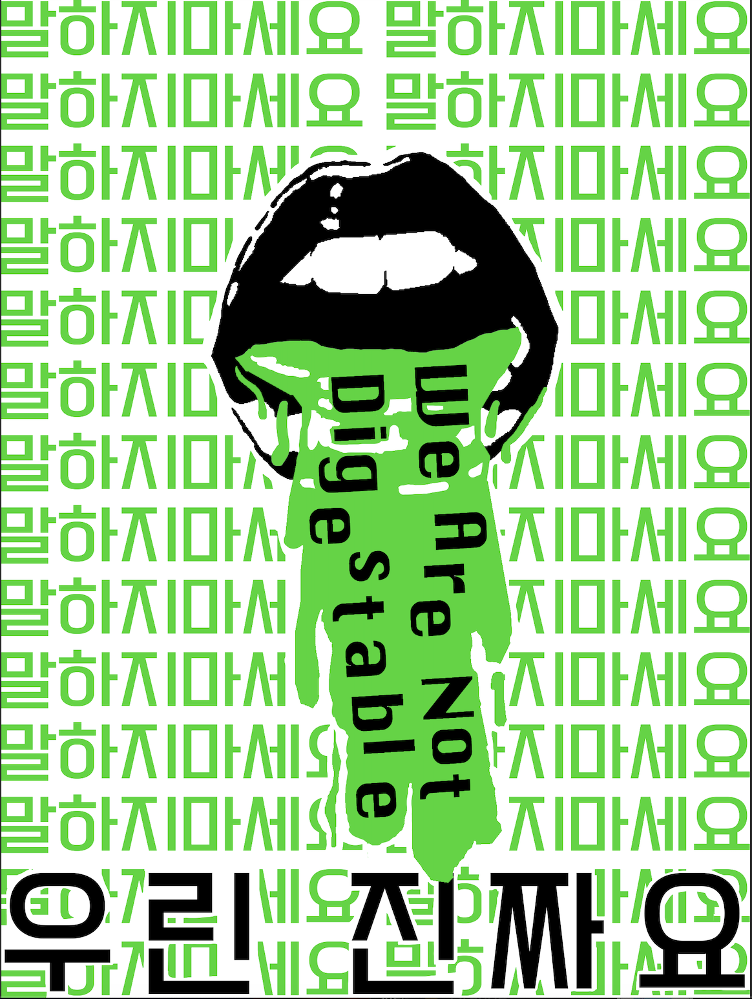

9th Grade - Screenprinted Shared Canvas
Process & Steps
- Research & Brainstorming
- Sketching & Graphic Design
- Photography
- Photo Editing & Typography
- Storyboarding & Videography
- Building & Screen Printing
Introduction / Background Information
There are countless things wrong with the world; as students, many believe there isn't anything one can do to combat these flaws. This project challenged that notion and challenged us to face these issues in the world. The premise of this project was to design, construct, and print a classic screen-printed piece of graphic design addressing an issue in the world. The requirements were an edited photo of some part of our body and text in response or representative of the addressed issue; we were limited to under three colors and all things used in the project would be constructed, chosen specifically, and designed by us: Boards and screens for printing, fonts for text, photos of items and people, drawn additional aspects, etc.
CLICK FOR DOCUMENTARY
Preliminary Work
Research & Brainstorming
You can't solve a problem if you don't know anything about it. For this reason, before deciding on a design, we were required to research our chosen topic. For my topic I researched soft censorship by looking through case studies of censorship cases and anti-book banning campaigns to find the root of the problem. In the end, while it is a complex issue, I believe that there are two main parts of the problem with censorship, the people who fear 'unacceptable' media in favor of those that are 'easier to swallow' and the people who decide to be complacent in the face of this adversity. With this information in mind I switched to brainstorming for my design. I wanted to really play with the idea censored media being, as previously mentioned, 'hard to swallow' and non-censored media being considered more easily 'digestible.' This led to a design based around such wording and awkward photos of my mouth.
Active Designing & Art
Digital Design
With the basic concepts for our designs planned out, we began the visual design aspect in adobe photoshop. These rough sketches were far from pretty, but they were essential in providing the frame work for the next stages of the project. For my design, I settled on a concept of a high contrast, vibrant, pop-art style mouth vomiting text with repeated, monotonous text filing the background. Below are some of my initial, unpolished sketch designs.


Photography
Next came photography and photo editing. Using digital cameras, my classmates and I photographed the required pictures of each other in various different poses based on how we each wanted to edit them for our individual designs. People were planning works based around eyes, hands, sometimes an ear too, or maybe just a recognizable silhouette. Once we had these photos, we moved back into the digital workspace to edit them how we wanted.
Photo Editing
Because the physical screen printing limited us to fewer small details and 1-3 colors plus a background color to print onto, there was much to be done to make our photos fit these requirements. The first thing was editing photos to be achromatic in black and white. We did so with filters such as 'lighten' 'levels' and the main one 'threshold' to set everything into black and white with. To fix finer details we went in with plain black and white 'brushes' to embellish what needed to be hidden and emphasized for artistic purposes. Attached below in the following order are the unedited, half edited, and fully edited photos I used for this project.



Continued Digital Design & Typography
Next came the stage of using digital art to draw in the remaining aspects of our designs prior to physical screen building. While some people chose to use online elements and undergo the same process as done with their photos to get elements of their designs, I decided to draw in the rest of the remaining elements (apart from the text). For the text, I decided to have the vomit containing the words "We Are Not Digestible" in reference to the aforementioned phrases about appropriate media being media that is easily digestible to all. For the background and foreground text I decided to use Korean. As an avid K-pop fan (OT5 Shawol, go SHINee!), I wanted to use Korean text in reference to the extreme censorship forced onto K-pop idols. For that reason I chose to include the phrase repeated along the background "말하지마세요" (mal-ha-jee-ma-se-yo), an honorific way to say don't speak. To highlight how unrealistic and polished media are pushed and even mis-portray and romanticize hardships I included the foreground text in Korean "우린 진짜요" (u-reen jin-jja-yo), we are real. The people seen in media are real too (disregarding AI of course), they have struggles that are overlooked and hidden, and I consider the fact that there is a need to hide, and it being a normality to hide, to be in of itself a form of censorship.

Physical Building & Printing
21st Century Skill Competency
One “21st century competency” I believe that I portrayed in this project was “Creativity and Innovation.” This project relied heavily on creativity and finding creative ways to solve a problem. For example, the very nature of this project depended on our abilities to find a creative, artistic way to address a complex societal issue. These issues have existed in society since the beginning of time, tasking highschoolers without a fully developed frontal lobe to tackle these problems would certainly yield interesting and innovative results. I consider my choice to use different scripts and languages to also be a very creative choice to to make use of the limitations of vinyl screen printing. I creativly adressed problems with my design, such as the color limitation and limitations to vinyl cutter capabilities by using the same color for large detached shapes rather than many small or one large, both of which would be near impossible for later stages.